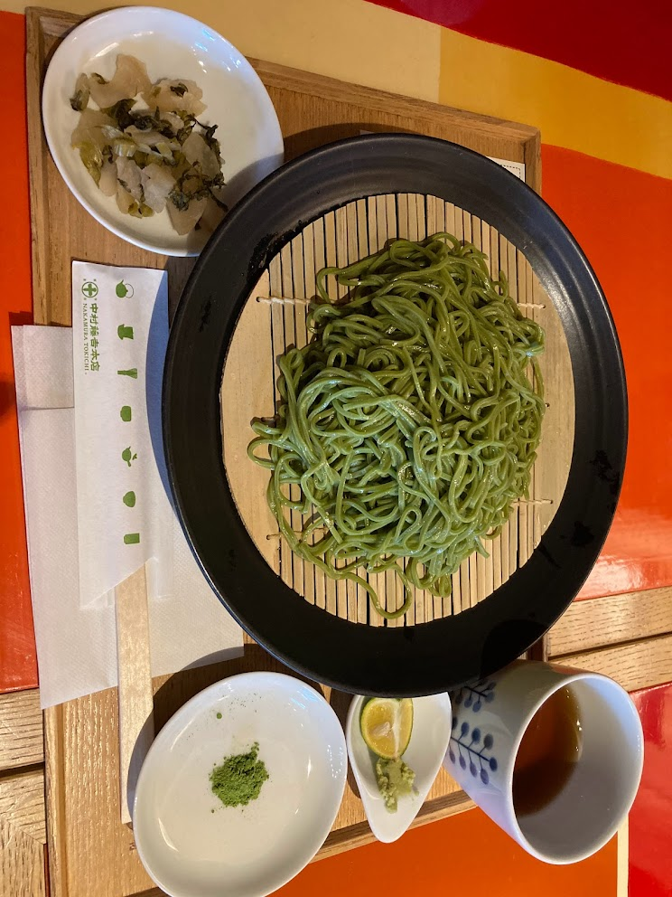
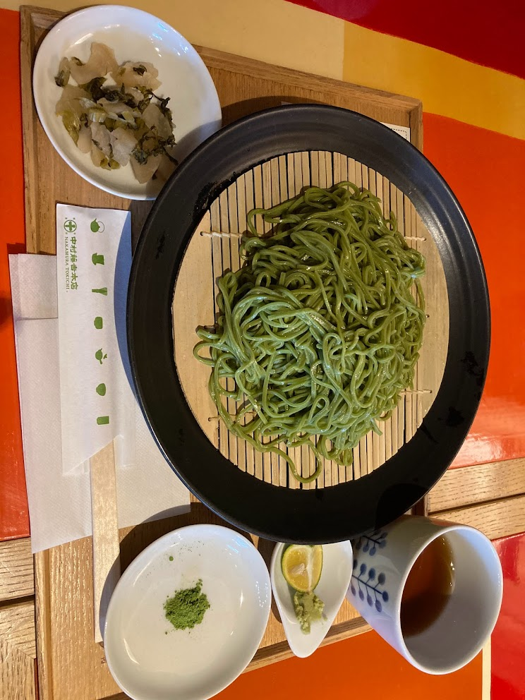

卒業旅行in京都散歩（前編）
～京都郊外編～
03/12 2022
カテゴリー：部員同士での散歩
 京都府京都市・宇治市
京都府京都市・宇治市
約3年ほど所属した散歩サークルもそろそろ分かれのタイミングが来たため、役職メンバーで卒業旅行へ行って来ました。サークル以外でも部員同士で会ったり、出かけたり、ご飯へ行ったりと和気あいあいと楽しんでいるサークルです！そんな緩くも楽しいサークルメンバーを誘って京都へやって来ました。
嵐山方面に行き、渡月橋や竹林を歩いて自然や非日常を感じてきました。

次に宇治で有名なお店で抹茶を楽しんできました。

「中村藤吉本店 宇治本店」さんはとても人気店で今回は1時間ぐらい並びました。このお店は土日は30分待ちは確実な人気店であり、今回の散歩で来店出来てとても良かったです。
 

京都散歩は2日間に渡って実施しました。今回はこの辺で
後編へ続く